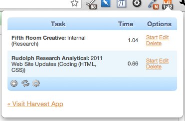

About Hayfever
Hayfever is a Google Chrome extension for the Harvest time tracking service. It allows you to manage, start and stop timers that sync directly with your Harvest account via the Time Tracking API. The Hayfever icon displays a badge with the total number of hours you've logged that day.
I created Hayfever because I'm a web developer and I constantly forget to log my hours on Harvest. Accurate time tracking is a necessity when you're paid by the hour. I use Hayfever every day, and I've released it because I hope others find it as useful as I have.
Screenshots
-

Hayfever Timesheet Popup -
Hours Badge (with customizable color)
Feedback & Support
If you encounter a bug, have trouble using Hayfever, or would like to see a feature in a future release, please leave me some feedback at the issue tracker:
https://github.com/mikedamage/hayfever-chrome/issues
Contact the Author
The best way to contact me regarding Hayfever is via the feedback link above, but you can also find me on Twitter as @mikedamage.